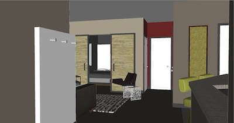
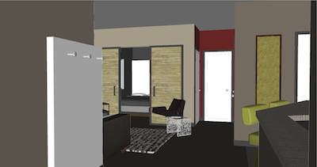

Fatherland Flats - Live in the Heart of Nashville
Fatherland Flats is conveniently located between Downtown Nashville and the Five Points retail scene in East Nashville with great access to I-24, I-40, 440 and I-65. Get out and see all our neighborhood has to offer:
- Take a walk downtown- just a few blocks away is the Shelby Street walking bridge over the Cumberland River. Enjoy the new waterfront park, or cheer on the Titans at LP Field.
- Relax at any of the numberous local cafes- two blocks away is the Blue Sky Cafe, or six blocks east is Marche in Five Points.
- Swing down to Shelby Bottoms Greenway and play some golf, softball, or just go on a run or ride your bike.
- Late night fun? No problem, and no need to drive. Walk up to Fat Bottom Brewery, 3 Crow bar, Holland House or the Pharmacy- from as little as three blocks to one mile away, you are close to all of the action.